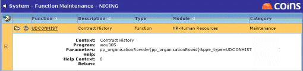
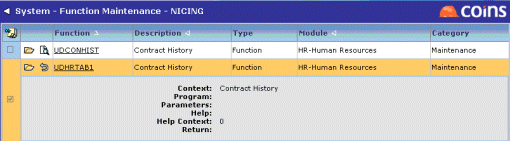
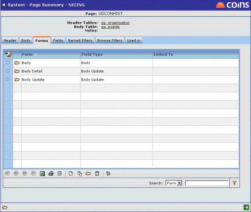
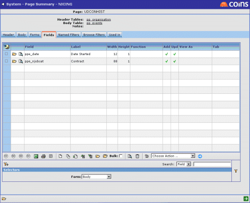
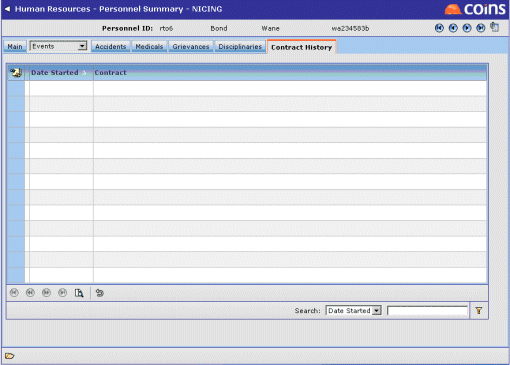
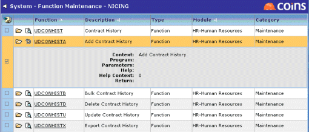
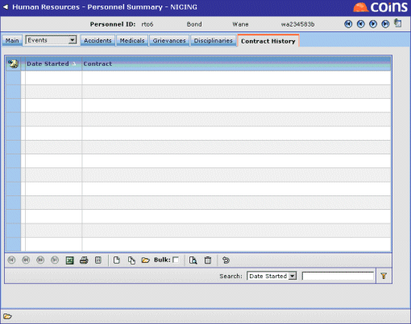

The easiest way to set up your own browse tab is to copy the function for the Grievances tab (%WHRBPQE1), change the value of ppe_type to your own type, and then copy the page for %WHRBPQE1 and change the fields/labels to what you want. In the example below, we will go through the steps to add your own 'Contract History' tab to the 'Events' set of tabs in Personnel Workbench.

To create a function for the new tab in Personnel Workbench on which to place your new page:

In this example, we will leave the copied Forms (see screenshot below) as they are. The Body form is for the column fields on the browse and the Body Detail and Body Update forms (which can share a set of field definitions as specified by the Field Type column - see screenshot below) cover the fields you see when clicking on the detail and update buttons respectively for a row.

On the Fields tab select in turn each of the Field Type forms you are using and put in the fields you want. In this example, the Body form will have a date field (ppe_date) to hold the date that a person started on a contract and a character field (ppe_njobcat) to record the contract (see screenshot below). On the Body Update form, we will have a notes character field (ppe_notes). A list of available fields can be found by clicking on the body table pp_events link at the top of the screen. You can only use fields marked as DB (that is, that are actually stored on the pp_events record in the database).

To add your page to Personnel Workbench go to HR > HR Maintenance > HR Parameters and in the UDTABS parameter, specify your browse function, tab function and the tab group you want your new screen to appear on in Personnel Workbench. The appropriate tab group function name can be found by looking at the Personnel Workbench page function (%WHRSPOR) in Page Designer. The format for the UDTABS parameter is:
<browse func 1>|<tab func 1>/<tab group 1>,<browse func 2>|<tab func 2>/<tab group 2>,…
which in our example is “UDCONHIST|UDHRTAB1/%WHRSPORTGRP4”. The new tab will now appear in Personnel Workbench:

The screen shown above is not very useful as it does not have many buttons available so you cannot create a new record. To add buttons:
A - for add and copy buttons;
B - for the 'Bulk'
D - for the delete button;
U - for the update button;
X - for the export to Excel button.

This makes the new tab ready for use:

The following restrictions apply to the use of the pp_events table for your own purposes: